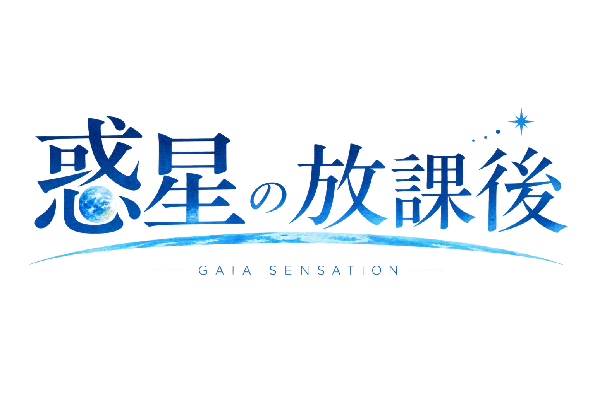
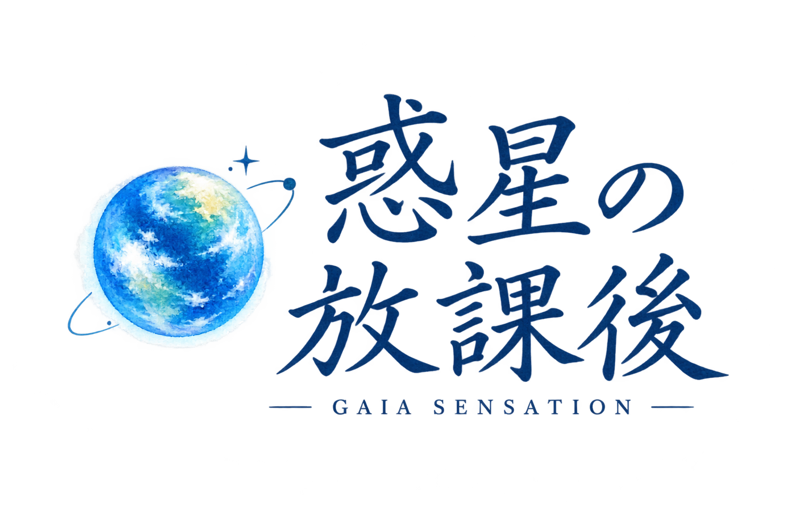
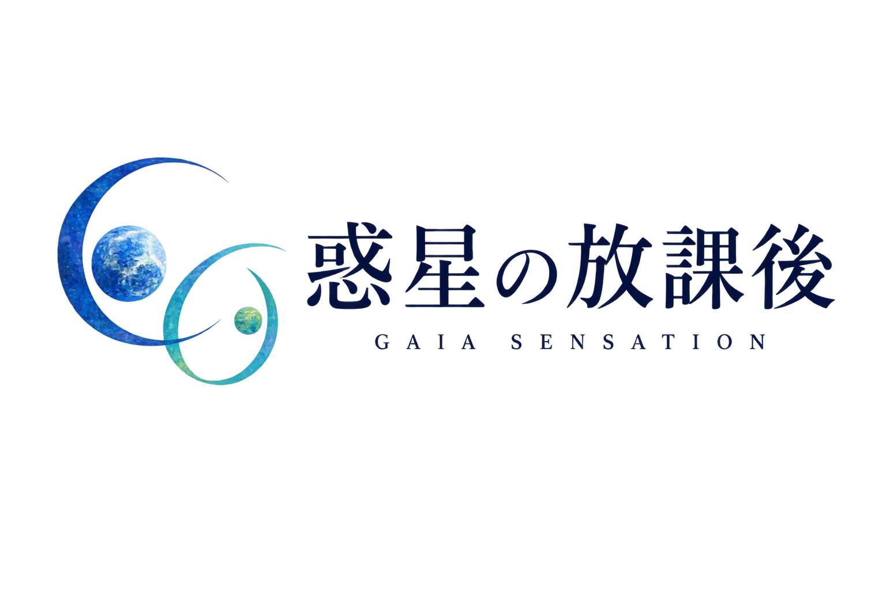
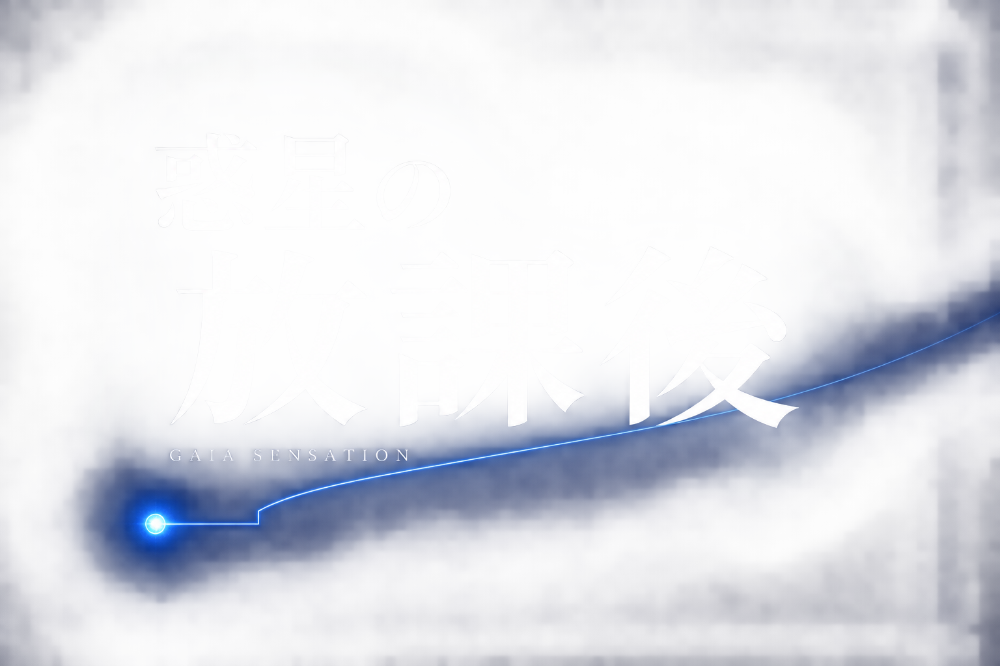
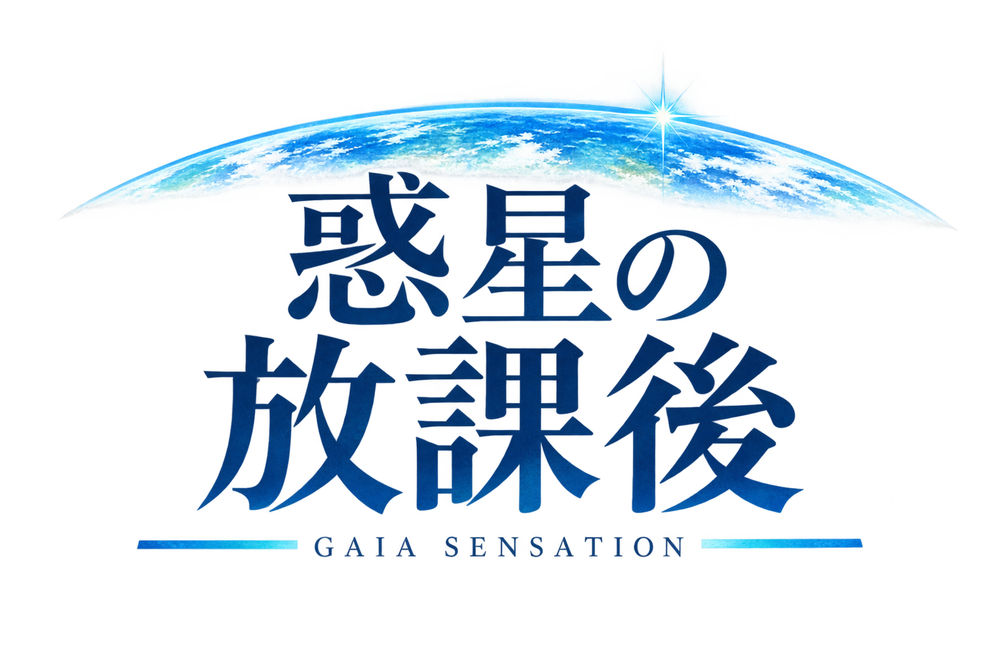
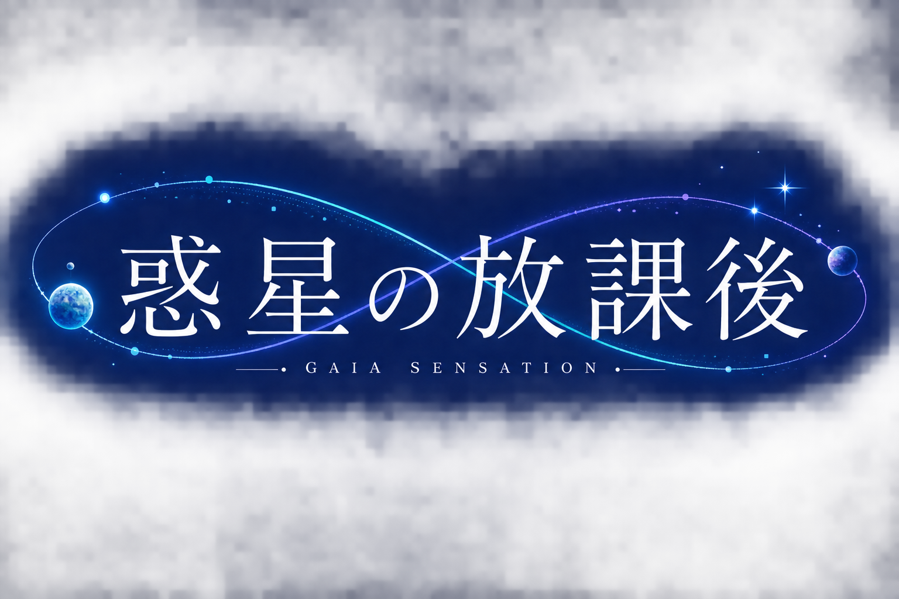
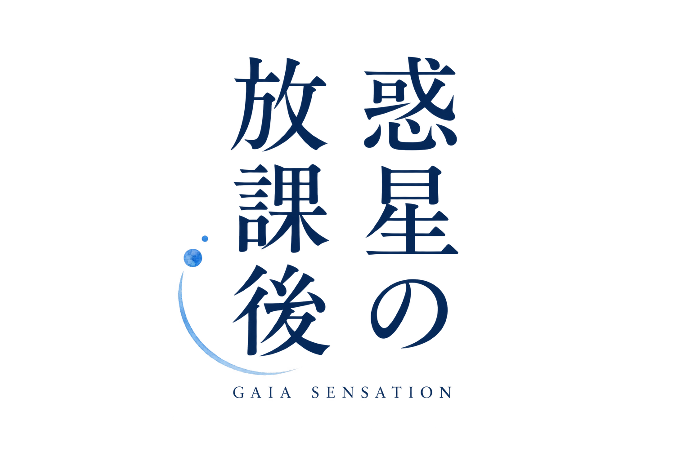
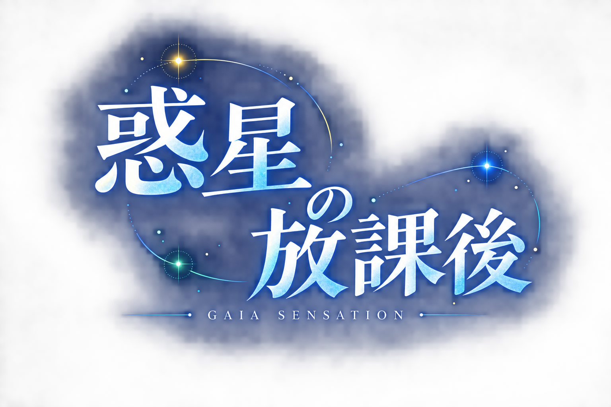
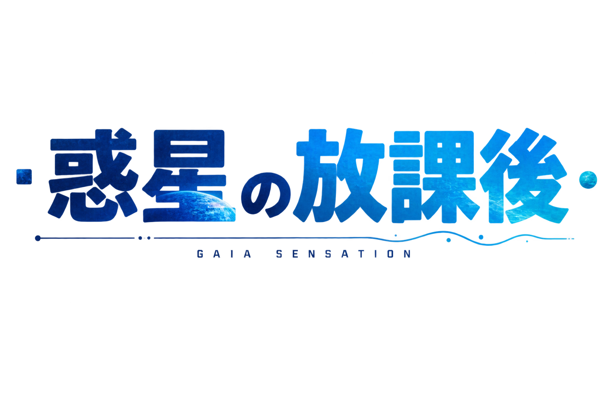
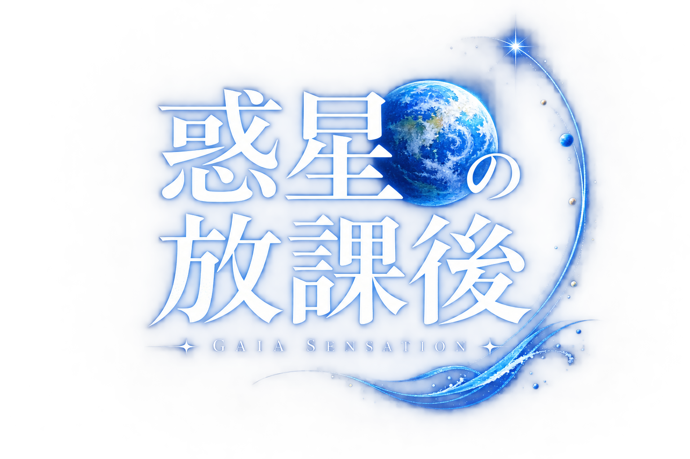

11海風のワードマーク
海辺の放課後を、広がりのある文字と一筋の波で。
GAIA SENSATION · LOGO STUDIES / ROUND 02
海辺の放課後、共につくること、観測と応答。現行台本を手がかりに、文字・組み方・モチーフを変えた10案。「惑」の巻いた飾りは使用しません。
前の10案を見る · 画像をクリックすると透過PNGを開きます。

海辺の放課後を、広がりのある文字と一筋の波で。

台本の「水彩の惑星と手書きロゴ」を、そのまま出発点に。

違うものが、違ったまま影響し合う。二つの開いた曲線。

小さな観測点から先へ伸びる、未完成の線。

地球を遠い天体にせず、いま立っている場所として描く。

生物の脈動と機械の信号が、並んで続いていく。

大きな答えより、まだ誰かと続きを書ける時間。

離れた点をひとつにまとめず、それぞれの光を残す。

柔らかな青春と、ものづくりの実直さを両立する。

日常から宇宙へ抜けていく、開いたタイトルの輪郭。